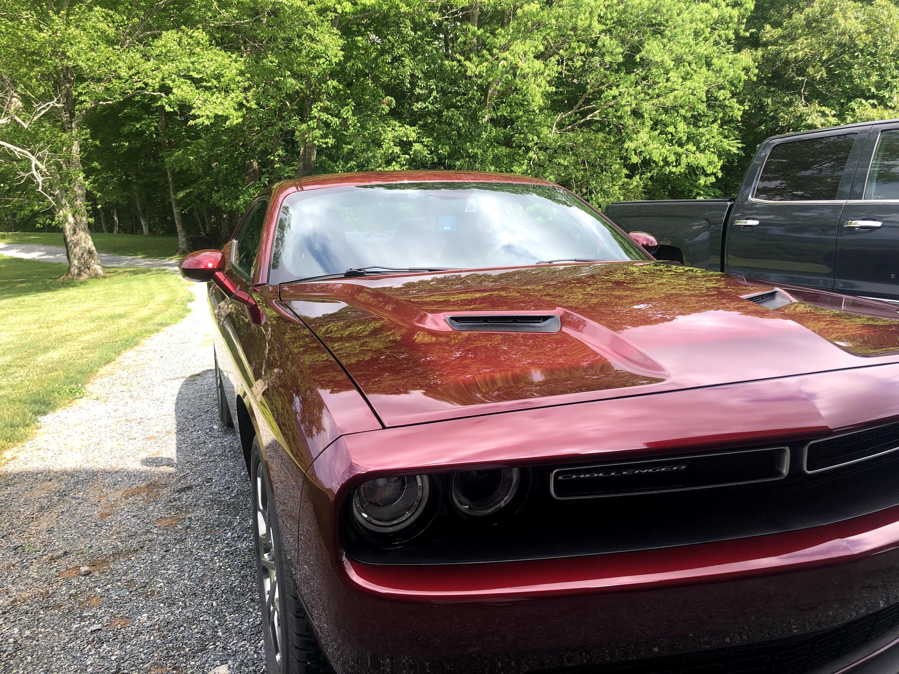
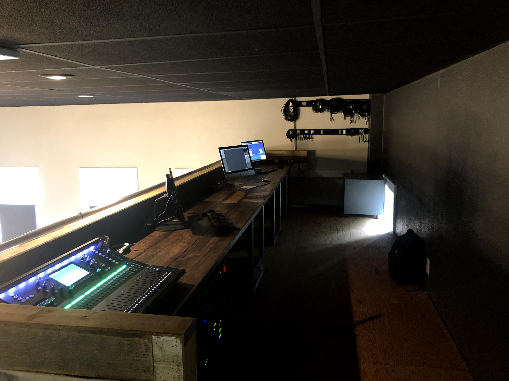

Playing Guitar
I have always been interested in music and playing music, so I tought myself with some help from great friends how to play. It led to the chance to play at my church, and an audition for the Liberty Worship Collective. The image below is of me playing at my church a few years ago.

Muscle Cars
Cars have been interesting for me for as long as I can remember, always wanting to see teh fastest and loudest car. I now drive a muscle car, making modifications often and crusing down the highway. The image below is of my car.
Wood Construction
I recently got into wood working and crating different furniture. The image below is of a 20ft desk I built over the summer of 2021 for my church to use for technological needs.
Traveling
I have always been an avid traveler, and enjoy it. I have been to multiple countries, such as China, and many states in the U.S. The image below is from the summer of 2021 when I traveled to the Big Island of Hawaii.